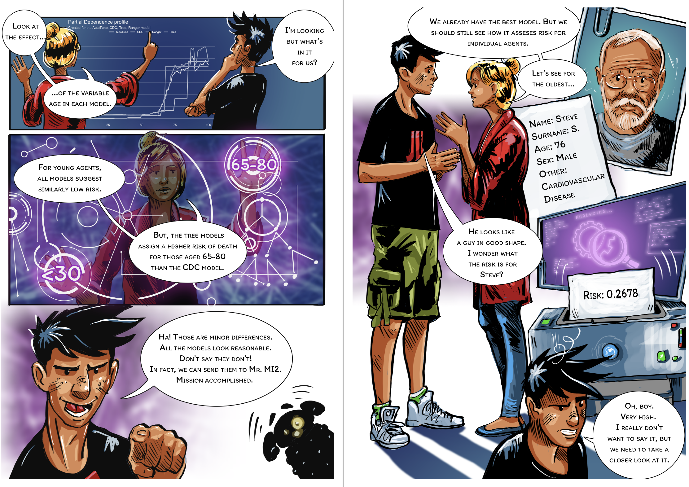
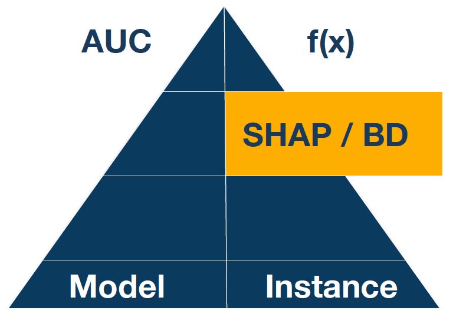
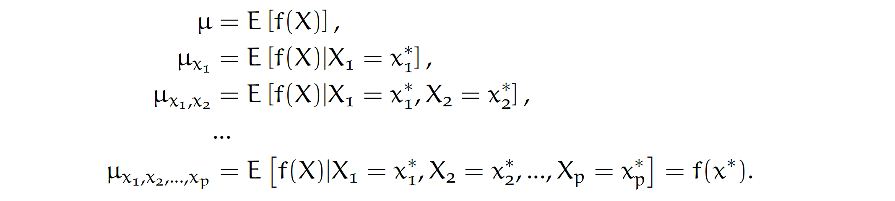
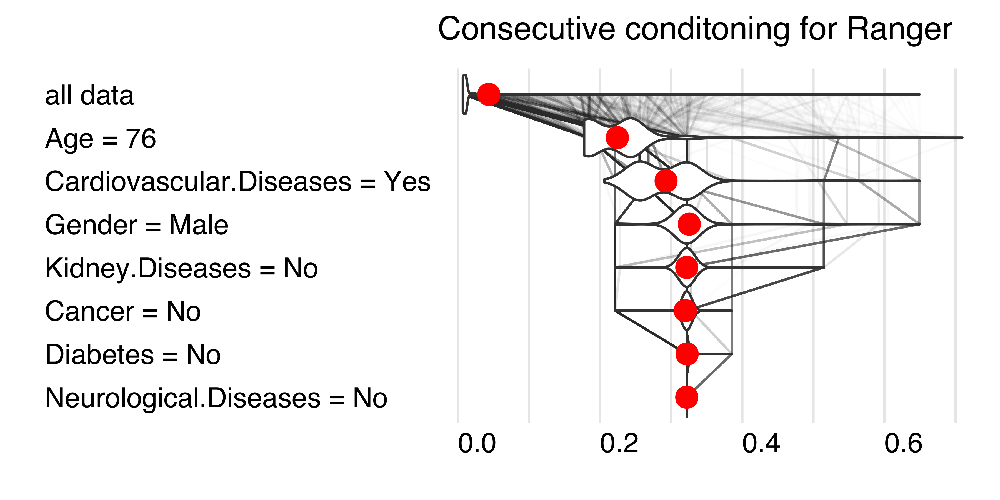
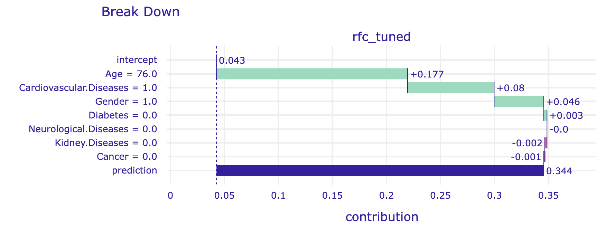
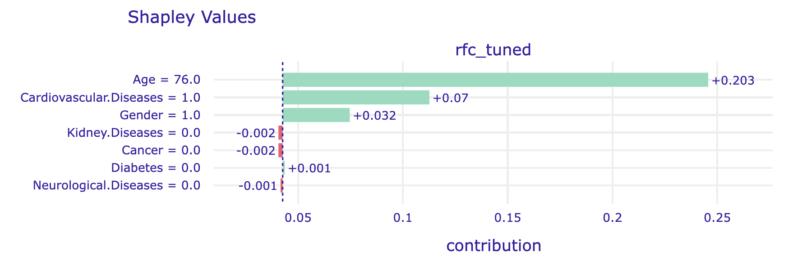
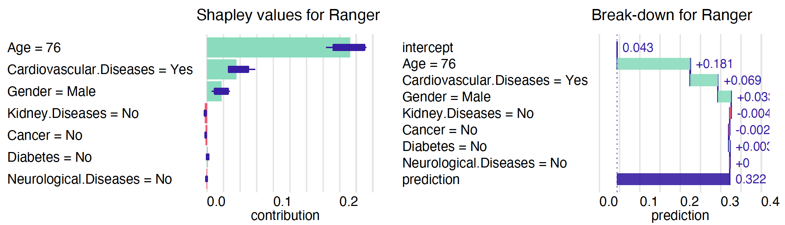

Steve = pd.DataFrame({
"Gender": [1],
"Age": [76],
"Cardiovascular.Diseases": [1],
"Diabetes": [0],
"Neurological.Diseases": [0],
"Kidney.Diseases": [0],
"Cancer": [0]
})
model_rfc_tuned.predict_proba(Steve)
# array([[0.65611756, 0.34388244]])Step 8. Shapley values and the Break-down plots

From the model developer perspective, we are often interested in the global behaviour of a model, i.e. whether it has high performance or how it changes on average as s function of some feature. But the user perspective is different. In most cases, a user is interested in an individual prediction related to him or her. Often we hear about the ,,right to explanation’’, which means that for a model prediction, we should be able to find out which variables significantly influenced the model prediction. Especially for high-stake decisions, we should enrich model predictions with as much information as possible to support informed and responsible predictions.

For tabular data, one of the most commonly used techniques for local variable attribution is Shapley values. The key idea behind this method is to analyze the sequence of conditional expected values. This way, we can trace how the conditional mean moves from the average model response to the model prediction for observation of interest \(x^*\).
Let’s consider a sequence of expected values for model predictions conditioned on expanding sequence of variables.

By looking at consecutive differences \(\mu_{x_1}-\mu\), \(\mu_{x_1,x_2}-\mu_{x_1}\) and so on, one can calculate the added effects of individual variables, see an example in Figure 1. It sounds like a straightforward solution; however, there are two issues with this approach.
One is that it is not easy to estimate the conditional expected value. In most implementations, it is assumed that features are independent, and then we can estimate \(\mu_{K}\) as an average model response with variables in the set \(K\) replaced by corresponding values from observation \(x^*\). So the crude estimate would be
\[ \widehat{\mu}_{K} = \frac 1n \sum_{i=1}^n f(x_1^o, x_2^o, ..., x_p^o),\text{ where }\left\{ {{x_j^o = x_j^*,\text{ if }j \in K} \atop {x_j^o = x_j^i,\text{ if }j \not\in K.} } \right. \]
The second issue is that these effects may depend on the order of conditioning. How to solve this problem? The Shapley values method calculates attributions as an average of all (or at least a large number of random) orderings, while the Break-down method uses a single ordering determined with a greedy heuristic that prefers variables with the largest attribution at the beginning.

Python snippets
Let’s define an observation for which we will examine the model more closely. Let it be a 76-year-old man with hypertension. We show a local model analysis using model_ranger as an example.
The predict_parts function for a specified model and a specified observation calculates local variable attributions. The optional argument order forces use of a specified sequence of variables. If not specified, then a greedy heuristic is used to start conditioning with the most relevant variables. The results are presented in Figure 4.
breakdown_steve = explainer_rfc_tuned.predict_parts(Steve,
type="break_down", random_state=0)
shap_steve = explainer_rfc_tuned.predict_parts(Steve,
type="shap", random_state=0)
breakdown_steve.plot(show=False)
The alternative is to average over all (or at least many random) orderings of variables. This is how the Shapley values are calculated. The show_boxplots argument highlights the stability of the estimated attributions between different orderings.
shap_steve.plot(show=False)
The Shapley values are additive. For models with interactions, it is often too much of a simplification. The attribution method that can be used to address this problem is Break-down with interactions. Just change the type argument to break_down_interactions.
Note that by default, functions such as model_parts, predict_parts, model_profiles do not calculate statistics on the entire data set (this may be time-consuming), but on n_samples of random cases, and the entire procedure is repeated B times to estimate the error bars.
R snippets
Let’s create an observation for which we will examine the local behaviour of a model more closely. Let it be a 76-year-old man with hypertension, we will call him Steve. Below we use model_ranger to illustrate the local model analysis.
Steve <- data.frame(Gender = factor("Male", c("Female", "Male")),
Age = 76,
Cardiovascular.Diseases = factor("Yes", c("No", "Yes")),
Diabetes = factor("No", c("No", "Yes")),
Neurological.Diseases = factor("No", c("No", "Yes")),
Kidney.Diseases = factor("No", c("No", "Yes")),
Cancer = factor("No", c("No", "Yes")))
predict(model_ranger, Steve)
# 0.322The predict_parts function for a specified model and a specified observation calculates local variable attributions. The optional argument order forces use of a specified sequence of variables. If not specified, then a greedy heuristic is used to start conditioning with the most relevant variables.
bd_ranger <- predict_parts(model_ranger, Steve)
bd_ranger
# contribution
# Ranger: intercept 0.043
# Ranger: Age = 76 0.181
# Ranger: Cardiovascular.Diseases = Yes 0.069
# Ranger: Gender = Male 0.033
# Ranger: Kidney.Diseases = No -0.004
# Ranger: Cancer = No -0.002
# Ranger: Diabetes = No 0.003
# Ranger: Neurological.Diseases = No 0.000
# Ranger: prediction 0.322
plot(bd_ranger)The alternative is to average over all (or at least many random) orderings of variables. This is how the Shapley values are calculated. The show_boxplots argument highlights the stability of the estimated attributions between different orderings.
shap_ranger <- predict_parts(model_ranger, Steve, type = "shap")
plot(shap_ranger, show_boxplots = TRUE)
The Shapley values are additive. For models with interactions, it is often too much of a simplification. An alternative variable attribution method that can be used to identify pairwise interactions is Break-down with interactions. Just change type argument to break_down_interactions value. See Chapter 7 in EMA book for more details.
Note that by default, functions such as model_parts, predict_parts, model_profiles do not calculate statistics on the entire data set (this may be time-consuming), but on n_samples of random cases, and the entire procedure is repeated B times to estimate the error bars.